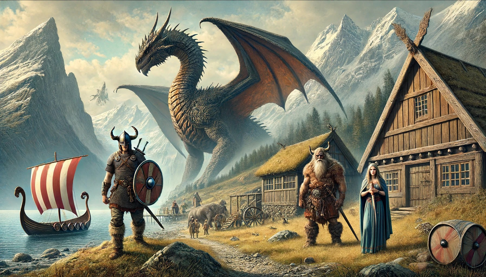

🌿 Bienvenido al Mundo de la Mitología Nórdica ⚔️
Sumérgete en un universo de dioses poderosos, héroes legendarios y criaturas místicas. Desde los majestuosos salones de Asgard hasta los oscuros dominios de Helheim, la mitología nórdica ha dado vida a historias de valentía, traición y destino.
Descubre los secretos de Odín, el Padre de Todos, el trueno de Thor, la astucia de Loki, y el papel de las valientes valkirias en la batalla. Explora el Valhalla, donde los guerreros caídos esperan el Ragnarök, y conoce los seres mitológicos que habitan los nueve mundos del Yggdrasil.
🔱 Explora. Aprende. Adéntrate en la leyenda. 🔥
¿Cuál es la historia de la mitología nórdica? Antes de que los nórdicos, también llamados vikingos, se convirtieran al cristianismo en la Edad Media, tenían su propia religión pagana. El núcleo de esta religión era lo que ahora llamamos "mitología nórdica". Es el conjunto de historias religiosas que daban sentido a la vida de los vikingos. Estos mitos giran en torno a los dioses y diosas, personajes fascinantes y muy complejos de los que quizá hayas oído hablar, como Odín, Thor, Freya y Loki. Es interesante observar que la religión nórdica, de la que formaban parte estos mitos, nunca tuvo realmente un nombre. Los que la practicaban la llamaban simplemente "tradición". La mitología nórdica es el conjunto de mitos y tradiciones que se originaron en el norte de Europa. Llegó hasta los vikingos y otros pueblos germánicos durante la época vikinga.
Esta mitología nórdica se basaba en un sistema religioso politeísta que se practicaba en amplias zonas en la Edad Media y antes del periodo de cristianización. Esta mitología combina una cultura rica y compleja con historias y poemas de la época vikinga. En la actualidad, la cultura popular se inspira profundamente en la mitología nórdica. Las adaptaciones del universo vikingo están en auge, ya sea a través de textos, libros o películas con el fabuloso universo Marvel y la nueva serie Vikings. La mitología del Norte fascina por las historias de sus dioses, Odín el dios de los Aesir y su hijo Thor, protector de Asgard. La mitología vikinga fascina a través de sus textos poéticos y de los numerosos símbolos misteriosos, pero sobre todo por la existencia de la mayor civilización de Europa, los vikingos.
Sólo después de la llegada del Cristianismo se llamó "paganos" a los que seguían las antiguas costumbres, lo que en aquella época podía traducirse como "los que viven en los páramos" o en otros lugares del campo.
Desde entonces, el nombre se ha mantenido. Las religiones son los intentos de la humanidad por conectar con lo divino, y la religión nórdica no es, por supuesto, una excepción. Aunque algunos aspectos puedan parecer extraños a los lectores modernos, podemos reconocer en ella la búsqueda de la humanidad por vivir su vida en presencia de seres superiores y sagrados.
Mil años después del final de la Era Vikinga, seguimos inspirándonos en la vitalidad y la maravilla de los mitos nórdicos y los dioses que los habitan. Para los vikingos, el mundo que encontraron estaba encantado. Simplemente se asombraron de "cómo son las cosas".
Lo que hoy llamamos naturaleza y cultura. Sin embargo, su religión y sus mitos no ignoraban la miseria, el conflicto y la injusticia de la vida terrenal. Más bien, los reconocieron como desafíos que debían superar mediante la realización de grandes obras en beneficio propio y de su pueblo. Para los vikingos, una vida repleta de tales hazañas era "la buena vida".
Antes de la llegada del cristianismo a los pueblos escandinavos, los bárbaros vikingos tenían sus propias religiones paganas. La mitología nórdica se basa en esta religión pagana, ya que los mitos, tradiciones y leyendas nórdicas contienen todas las historias religiosas que regían la vida de los vikingos. Una historia increíble que contenía batallas como el famoso Ragnarök, textos sobre dioses como el dios Odín, el jefe de todos los dioses (el jefe de los Aesir) y Thor, el dios del trueno, diosas como la diosa Freyja y también criaturas mitológicas como el pueblo de los gigantes y el pueblo de los enanos. En aquella época, la religión de los pueblos nórdicos no tenía un nombre definido: la llamaban tradición. En algún momento, los hombres creyentes se convirtieron gradualmente al cristianismo. Los últimos practicantes de la cultura nórdica comenzaron entonces a ser llamados paganos. Esta religión nórdica era una manera de que el pueblo vikingo se acercará a los dioses.
El pueblo vikingo era un pueblo politeísta (creía en muchos dioses) a diferencia del pueblo cristiano que era monoteísta. De hecho, creían en dioses, cada uno con sus propias habilidades y áreas de experiencia. Los nórdicos tenían un conocimiento cosmológico muy particular: creían en el árbol del mundo (Yggdrasil). El árbol Yggdrasil albergaba los nueve mundos donde habitaban Odín y los demás dioses nórdicos (en el mundo de Asgard), los humanos y las bestias feroces. La gente de nuestro tiempo se siente atraída por la maravilla de los diversos mitos y dioses nórdicos que les encantan. Los escandinavos se imaginaban que vivían en un mundo "encantado". Les fascinaba su mundo: la cultura y la naturaleza. Detrás de esta maravillosa imagen, la religión nórdica estaba estrechamente vinculada a los "sinsentidos" humanos: la guerra, la injusticia, los héroes y la vida. Los vikingos querían luchar, para proteger su riqueza y su tierra.
Los pueblos nórdicos eran un pueblo oral, que transmitía sus bellas historias, leyendas, mitos y costumbres a través de poemas y canciones orales. Esta es la principal razón de la complejidad de la mitología nórdica. La fuente precristiana más interesante que se ha descubierto es la Edda poética. La Edda Poética es la colección de poemas escritos en nórdico antiguo del siglo XIII, recogidos en un solo libro: el Codex Regius. Estos poemas describen e ilustran los diversos acontecimientos que tuvieron lugar a lo largo de la Era Vikinga. La Edda narra la creación del mundo y la vida de los dioses y diosas que lo habitan. La Edda es una importante fuente de información sobre la mitología nórdica, y los estudiosos la han utilizado para interpretar otros textos nórdicos.
A los celtas, sami y finlandeses se les llama escandinavos o "pueblo germánico". Estos pueblos de la misma cultura se situaban en el norte de Europa, a través de Islandia, Escandinavia y el norte de los Alpes. Pero el pueblo germánico más famoso en la cultura popular son los vikingos. Todos los habitantes del norte de Europa, así como los escoceses, ingleses y alemanes, tienen una alta probabilidad de tener sangre germánica. Esto significa que sus antepasados podrían ser vikingos, conocidos a través de la mitología nórdica.
¿Conoces a los navegantes Floki o Erik el Rojo? Los vikingos eran muy buenos navegantes, conquistadores y comerciantes. Navegaron entre varios países del norte (Dinamarca, Islandia, Suecia), pero también a nuevas tierras para conquistarlas: a Bagdad e incluso alrededor de América del Norte. A los escandinavos les gustaba navegar y aventurarse por las siguientes razones: gloria, poder y oro. En la sociedad vikinga, la riqueza definía el rango social. Cuanto más rico eras, más poder e importancia tenías en la sociedad. En aquella época, la riqueza no sólo estaba representada por monedas y tesoros, sino por la posesión de tierras. Cuanto más tierra poseía un hombre, más importante era en la sociedad.
En los libros para niños, los vikingos suelen aparecer como hombres sanguinarios y violentos. Estos libros no son auténticos, porque los vikingos también eran agricultores, comerciantes, músicos y artistas poéticos. Los vikingos eran gente muy creativa y eran superiores en la construcción de barcos en comparación con otros pueblos.